SWIM is the lead single from bts studio album, ARIRANG, released on march 2026 This album is about resilience,survival,and moving forward.
SWIM is the lead single from bts studio album, ARIRANG, released on march 2026 This album is about resilience,survival,and moving forward.
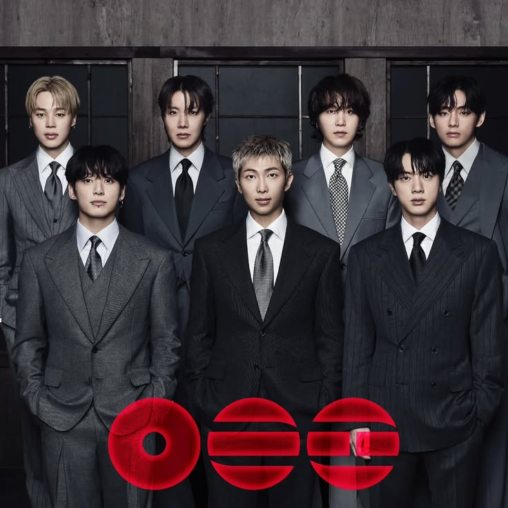
ARIRANG This album is a relfective and genre-blending project that marks the groups full-group return following their mandatory military service.
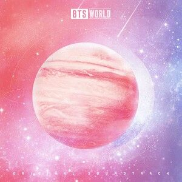
WORLD World is a companion album. Released in 2019. It serves as the official musical backdrop and soundtrack for the BTS game.
Proof This album was released in june 2022, to celebrate the groups 9th anniversary and summarize their past, present, and future.
THE BEST This album is Japanese-language greatest hits compilation album. Released onJune 16
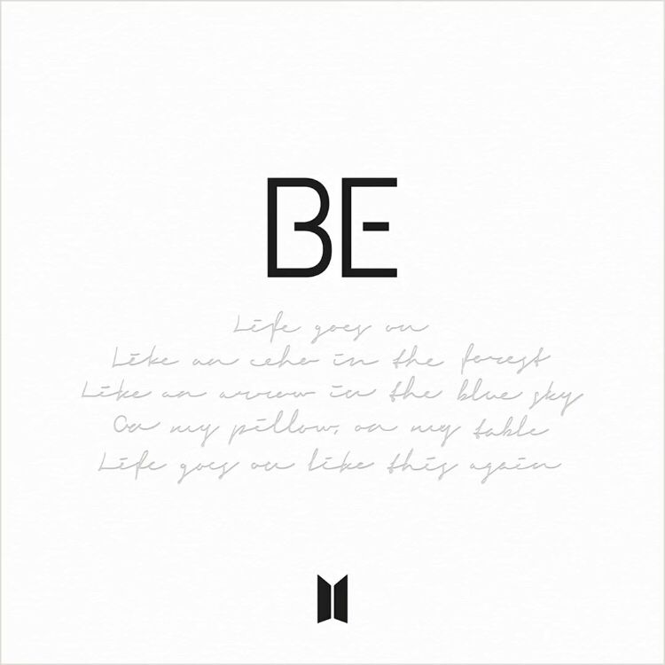
BE This album was created in November 2020, its a deeply personal, introspective project created in response to the COVID-19 pandemic.
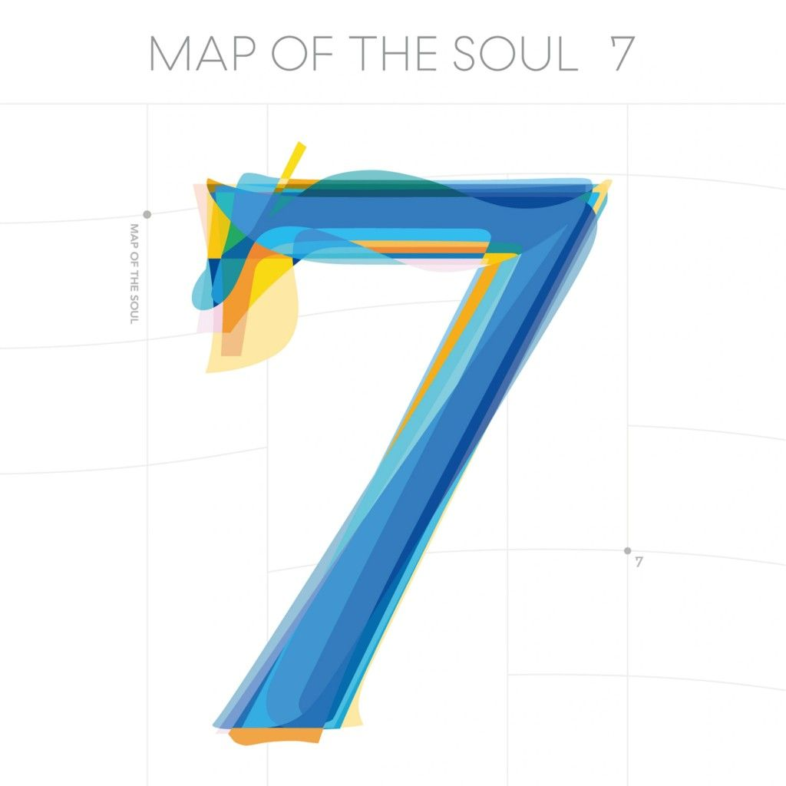
Map of the soul:7 This album is a deeply personal reflection on the band's seven-year journey, identity, and psychological growth since their debut.
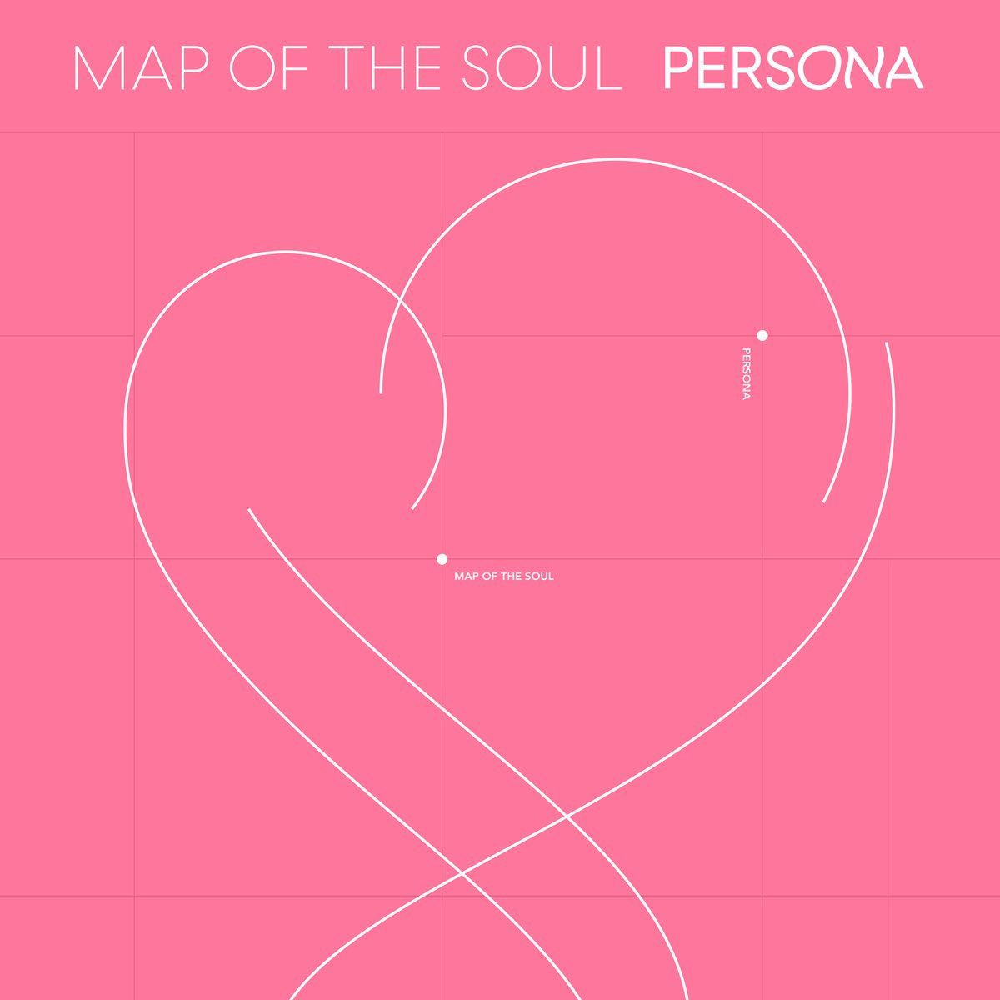
Map of the soul:PERSONA This album is about the human psyche, public identity, and the struggle between fame and true self.
LOVE YOURSELF 'answer' Released in Augest 2028This album delivers a message that loving oneself is where true love begins.
LOVE YOURSELF 'Tear' This album is about the darker side, heartache, and inevitalbe pain of separation that follows when a relationship is built on a false or untruthful version of oneself
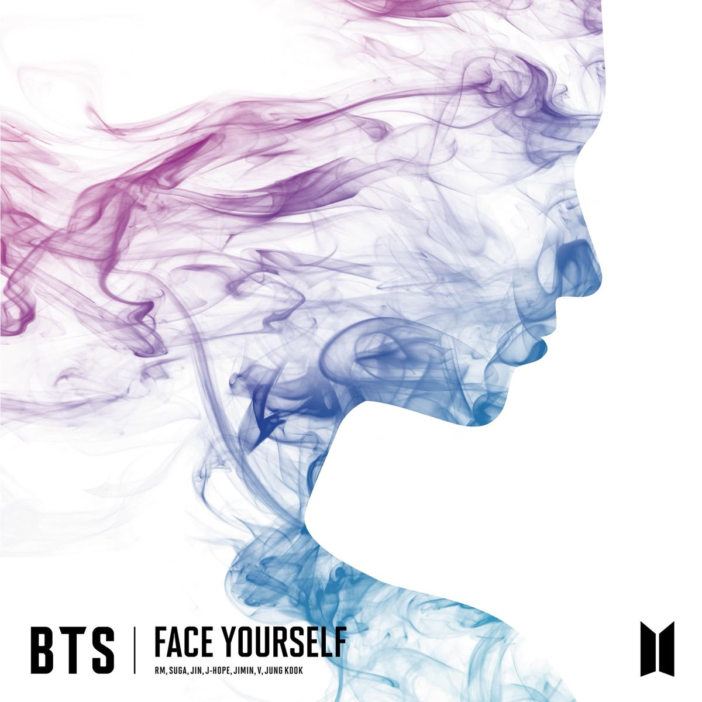
FACE YOURSELF Released in April 2018 This album centers on themes of self-reflection, growth, and confronting internal fears and reality.
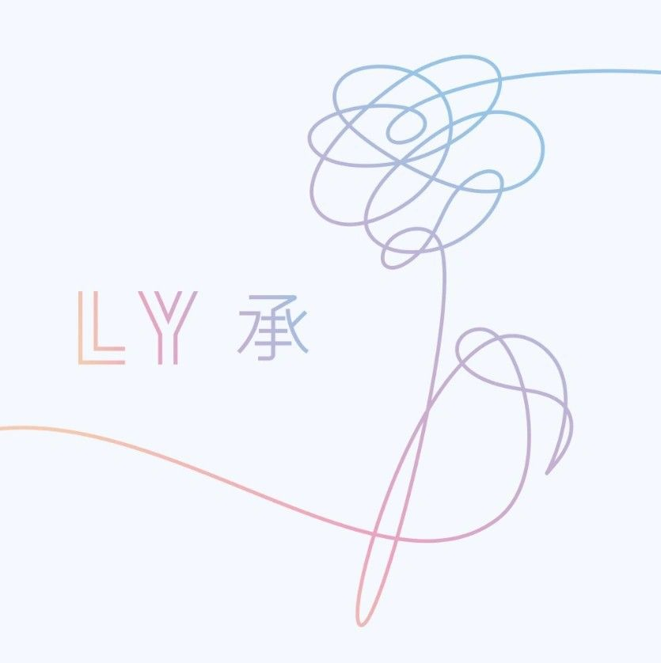
Love yourself 'Her' A bts mini album released in 2017 is about the anxiety, elation, and diverse facets of falling in love for the first time.
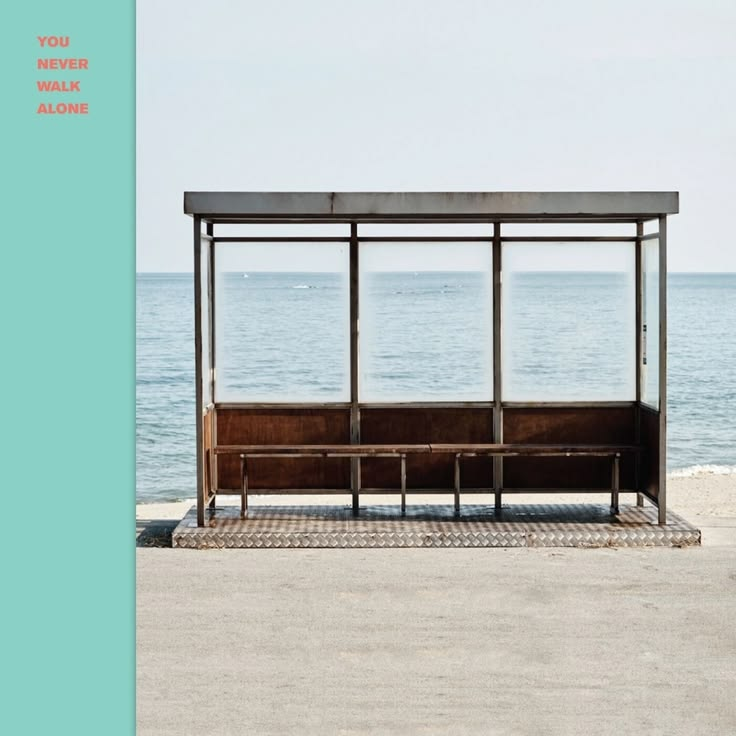
YOU NEVER WALK ALONE This album was released in 2017 and is a repacked extension of their 2016 album "Wings"
This album is based on youth, growth, and the pain of entering adulthood.
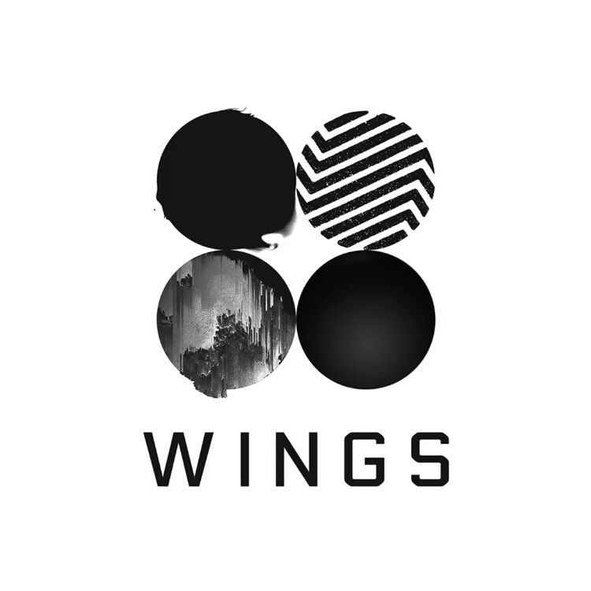
WINGS Released in 2016, this album is a concept album about the painful transition from innocent youth into the complexities of adulthood, temptation, and self awareness
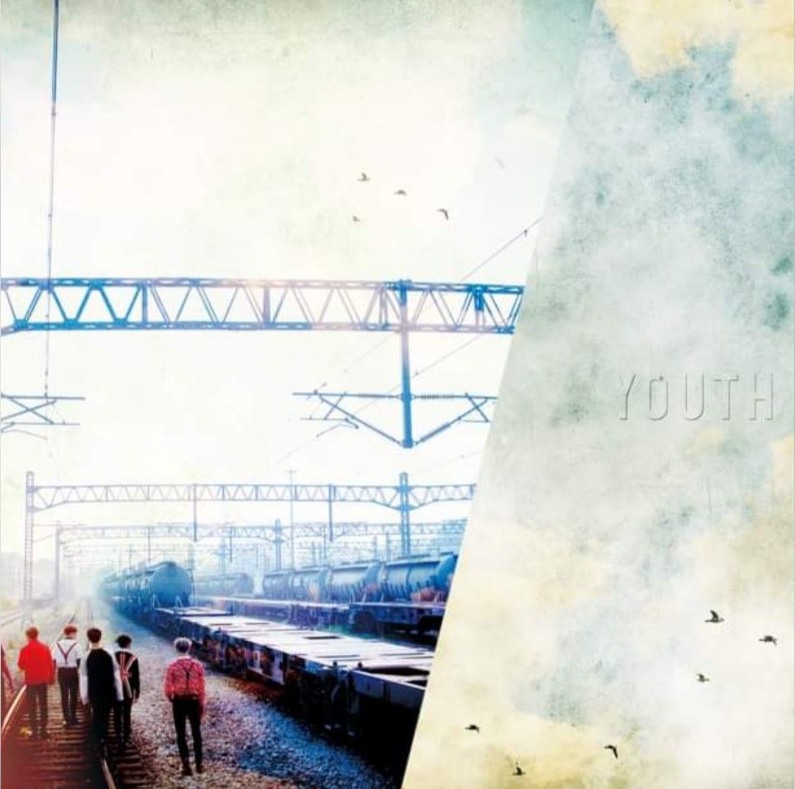
Youth This album was released on September 2016 The core themes of youth, includes the bittersweet transition into adulthood, and the emotional highs and lows of chasing dreams.
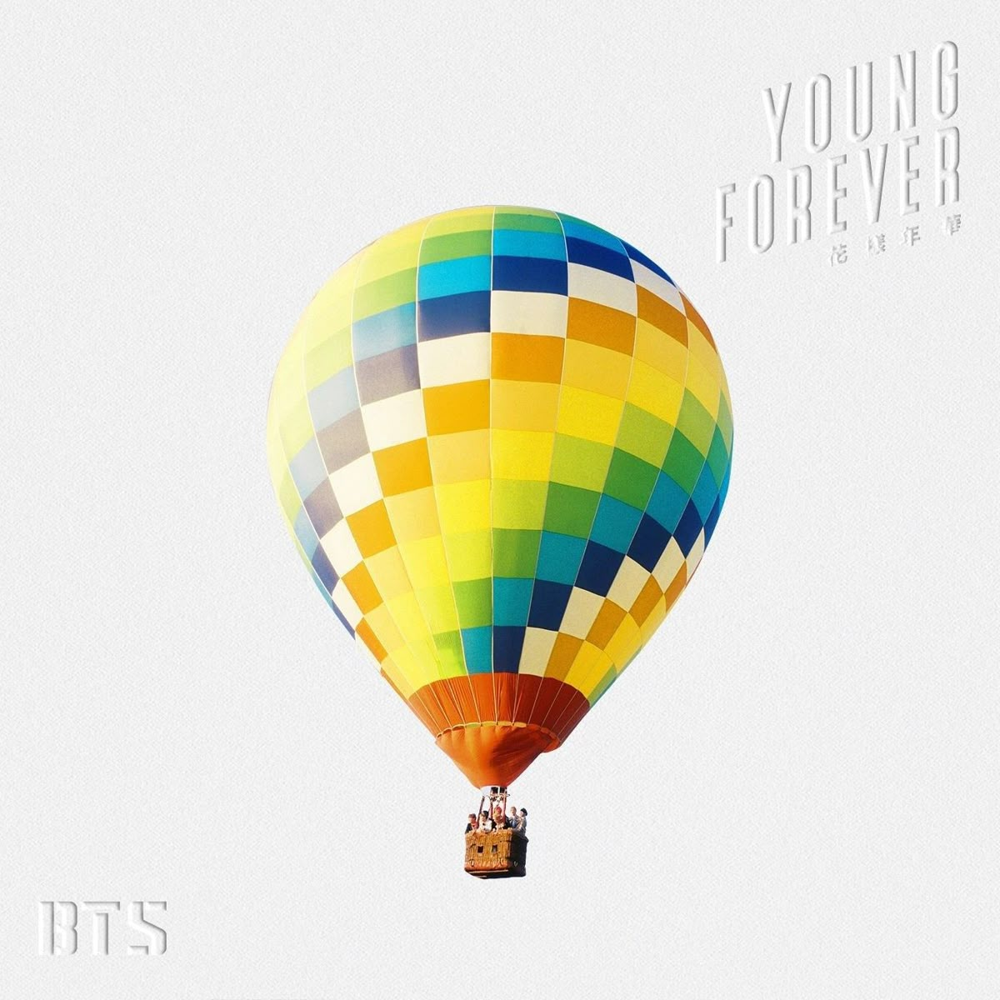
Young Forever Released in 2016, this album marks the epic conclusion of their The Most Beautiful Moment in LifeIt captures the bittersweet, painful, and uncertain reality of growing up.
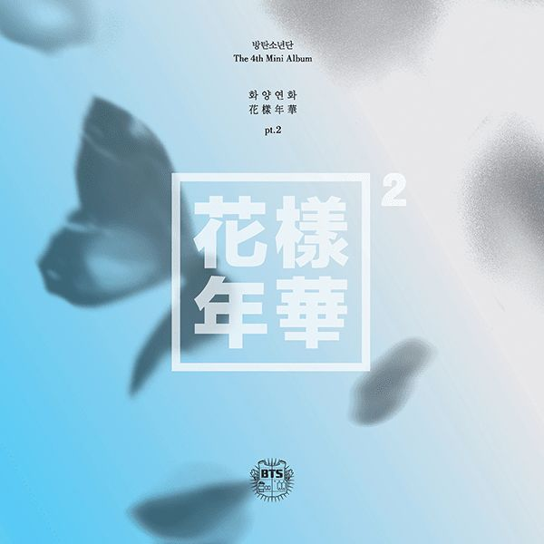
The most beautiful moment in life pt.2 Released in November 2015this album explores the raw energy, anxiety, and unstoppable momentum of youth as the members transition into young adulthood.